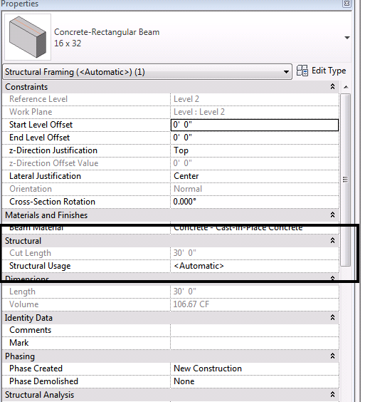

Beam Requires Curve
We discussed the issue of inserting a beam and also creating a curved beam in some depth already. The former discussion includes a pretty detailed analysis showing that you really do have to specify a curve in order to generate a valid beam instance, and all other overloads of the NewFamilyInstance will fail in one way or the other. In spite of this, people continue having problems inserting beam instances. My colleague Joe Ye just encountered another case like this:
Question: I am creating a beam using the following code:
Level level; FamilySymbol symbol; double x1, y1, x2, y2; XYZ p = new XYZ( x1, y1, level.Elevation ); XYZ q = new XYZ( x2, y2, level.Elevation ); Autodesk.Revit.DB.Structure.StructuralType st = Autodesk.Revit.DB.Structure.StructuralType.Beam; FamilyInstance beam = doc.Create.NewFamilyInstance( p, symbol, level, st ); LocationCurve beamCurve = beam.Location as LocationCurve; if( null != beamCurve ) { Line line = app.Create.NewLineBound( p, q ); beamCurve.Curve = line; }
When I try to use it, though, I run into several problems:
- Its beam type is <Automatic>:

- Even worse, it cannot host rebars.
Answer: Yes, I can reproduce what you say.
The reason that the beam cannot host rebars is that it lacks the rebar cover parameters. Concrete beams created manually have the following three rebar cover related parameters:
- Rebar Cover � Top Face
- Rebar Cover � Bottom Face
- Rebar Cover � Other Faces
The real reason lies deeper, though. As explained in some depth in inserting a beam, the beam instance really does require a curve to be specified when creating it. As your code above proves, the curve cannot simply be added after the initial creation step. If you create your beam using the following NewFamilyInstance overload instead of the one taking a point argument, all works well:
Curve useCurve = app.Create.NewLineBound( p, q );
beam = doc.Create.NewFamilyInstance(
useCurve, symbol, level, st );